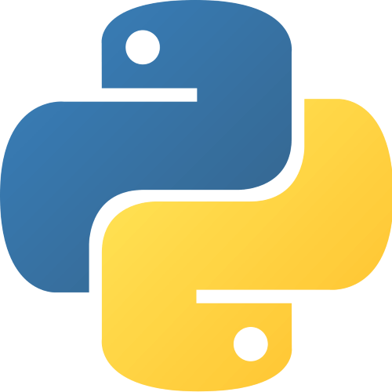
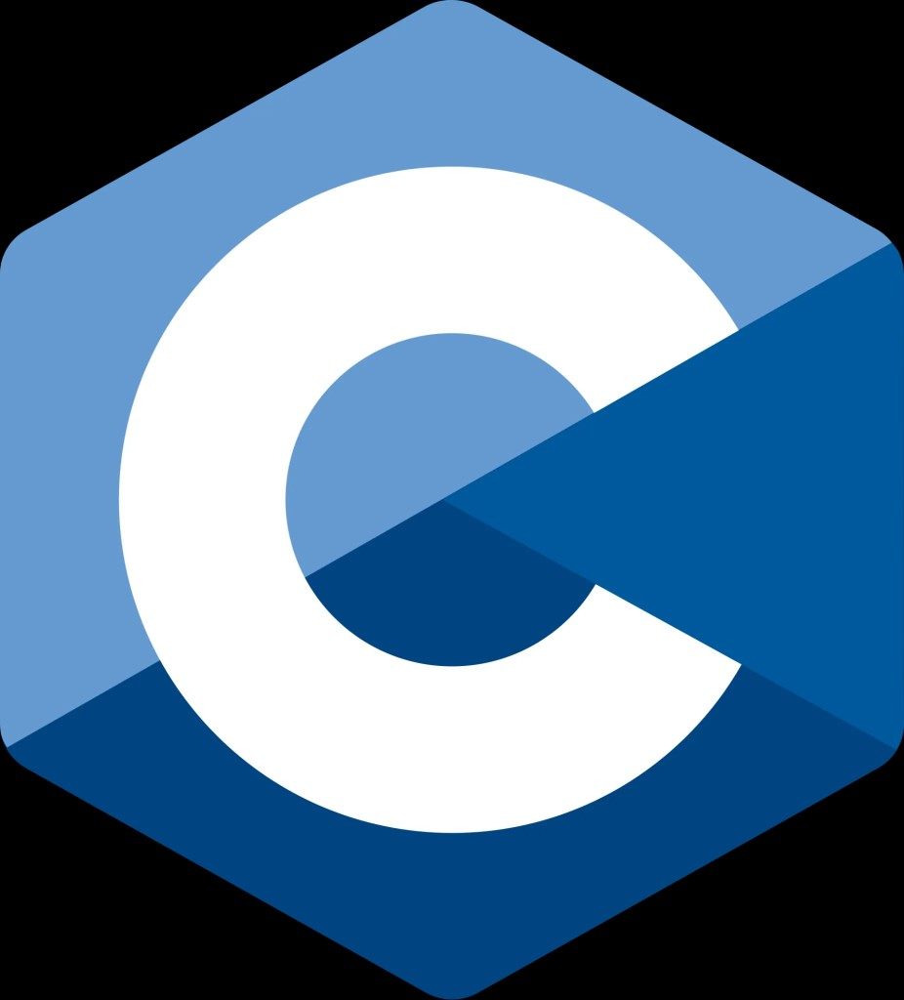
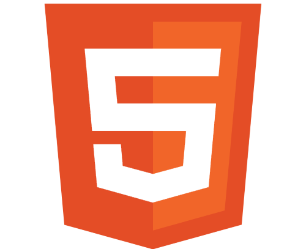

01
About Me
Second-year Computer Science student at EPITA with a growing interest in software development, data management and cloud technologies.
Academic projects have provided opportunities to develop programming and problem-solving skills, while a first professional experience at Reporters Without Borders demonstrated how technology can support real organisational needs.
Curious, independent and motivated to learn, with a strong interest in exploring different areas of computer science through practical projects.
Education
Second-year Computer Engineering studies at EPITA, centred on programming, algorithms and software development. Academic projects are where those skills are put into practice.
02
Skills
Technical Skills
Programming & Web Development
-

Python
-

C
-

HTML
-
CSS
Professional Skills
Critical Thinking
Analytical approach to technical challenges and problem solving.
Autonomy
Ability to organise tasks and progress independently.
Professionalism
Respect for responsibilities, deadlines and professional working practices.
Teamwork
Experience collaborating in academic and professional environments.
Patience
Persistence when facing technical challenges.
Time Management
Communication and adaptability skills.
Languages
- FrenchNative
- EnglishB2
- SpanishB1
03
Projects
The Minotaur Project / Overview
Academic Game Development Project
The Minotaur Project is a 2D single-player or multiplayer game inspired by the myth of Theseus and the Minotaur. Players enter a dangerous labyrinth and must find their way to the exit while avoiding the Minotaur. The game combines exploration, strategic decision-making and survival mechanics.
First-year EPITA project involving the development of a 2D video game inspired by Greek mythology.
Contribution
- Creation of the game's promotional website using HTML and CSS, developed without website-building tools.
What this developed
Building the promotional website without a site generator meant working directly with page structure and CSS layout, alongside a Python game developed for a first-year EPITA project. I also learned how to use Git for version control and how to deploy a website.
04
Professional Experience
First-year IT internship at Reporters Without Borders, in collaboration with Salesforce. The main objective was to support the organisation and improvement of data-management processes.
What this experience developed
-
Data ManagementTechnical skill
Experience organising, filtering and cleaning professional database information using Salesforce tools. Introduction to SOQL and AI technologies.
-
Team CollaborationBehavioural skill
Collaboration with professionals from different departments. Contribution to shared objectives and adaptation to team requirements.
-
Professional CommunicationTransferable skill
Regular participation in weekly meetings. Development of clear professional communication and progress reporting.
Development of practical experience in IT, Salesforce and data management within a professional organisation.
This internship resulted in becoming a volunteer for Reporters Without Borders until February 2027.
June 2023
Grocery Store Internship
Collaborated with colleagues on daily operations and customer service, strengthening teamwork, organisation and reliability.
May 2022
City Hall Observation Internship
Observed public service operations and administrative procedures, gaining insight into local government and electoral processes.
05
Interests
01
Cultural Heritage & Gastronomy
Interest in Cambodian heritage and world cultures, especially their history, traditions and gastronomy. Particular curiosity about Southeast Asian culinary techniques.
02
Gaming & Theorycrafting
Strong interest in Pokémon, game mechanics, statistical optimisation and competitive strategy. Enjoyment of analysing game systems and developing effective strategies.
03
Digital Culture & Visual Design
Interest in digital trends and social-media recommendation algorithms, particularly YouTube and TikTok. Appreciation for modern fashion, visual aesthetics and contemporary design.
06
Career Goals
-
01
Short-Term Goal
Secure a six-month internship in IT to apply academic knowledge, develop technical skills and gain professional experience.
-
02
Technical Development
Continue strengthening programming skills in Python and C. Expand knowledge of software engineering, data technologies and cloud computing.
-
03
Professional Exploration
Identify a future specialisation based on practical experience and personal interests possibly in AI / Cybersecurity / Data Science.
 Git
Git
 Linux
Linux